•Lista de Juguetes y Alimentos para Mascotas
La siguiente lista son los productos para mascotas que se han puerto a ventas por el sitio web:
(* clipckear para mas detalles)
-
Juguetes Cup Cake Cerezas Rascal
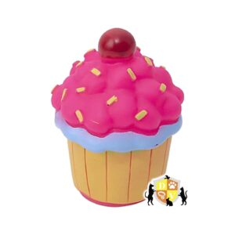Juguetes Cup Cake Cerezas Rascal
Los juguetes de vinilo RASCALS se caracterizan por ser de excelente calidad..
No son tóxicos. Y son libre de Ftalatos..
Son lavables y durables. Ideales para perros chicos o poco mordedores (no te olvides de consultarnos por juguetes para perros grandes, mordedores y/o cachorros). Divertidos diseños..
¡Todos nuestros desarrollos son a conciencia, por eso los expertos en conducta canina nos recomiendan!.
TIP de Responsabilidad: Supervisa tu mascota mientras juega, aprovecha ese tiempo para formar un vínculo con ella y de paso evitar accidentes!.Precio : $1500
-
Juguetes Cup Cake Rascal
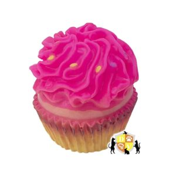Juguetes Cup Cake Rascal
Los juguetes de vinilo RASCALS se caracterizan por ser de excelente calidad..
No son tóxicos. Y son libre de Ftalatos..
Son lavables y durables. Ideales para perros chicos o poco mordedores (no te olvides de consultarnos por juguetes para perros grandes, mordedores y/o cachorros). Divertidos diseños..
¡Todos nuestros desarrollos son a conciencia, por eso los expertos en conducta canina nos recomiendan!.
TIP de Responsabilidad: Supervisa tu mascota mientras juega, aprovecha ese tiempo para formar un vínculo con ella y de paso evitar accidentes!.Precio : $1500
-
Juguete Dispenser Con Pinchos Rascals
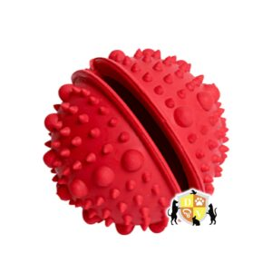Juguete Dispenser Con Pinchos Rascals
Los juguetes de vinilo RASCALS se caracterizan por ser de excelente calidad..
No son tóxicos. Y son libre de Ftalatos..
Son lavables y durables. Ideales para perros chicos o poco mordedores (no te olvides de consultarnos por juguetes para perros grandes, mordedores y/o cachorros). Divertidos diseños..
¡Todos nuestros desarrollos son a conciencia, por eso los expertos en conducta canina nos recomiendan!.
TIP de Responsabilidad: Supervisa tu mascota mientras juega, aprovecha ese tiempo para formar un vínculo con ella y de paso evitar accidentes!.Precio : $1500
-
Anillo Juguete dispensador de snack- Rascals
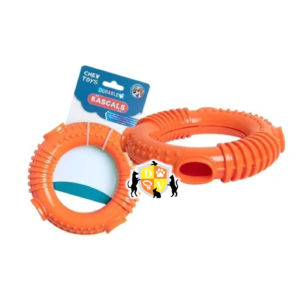Anillo Juguete dispensador de snack- Rascals
Los juguetes de vinilo RASCALS se caracterizan por ser de excelente calidad..
- Dientes limpios y encías sanas.
- Material muy durable y flexible, por ello evita que se lastimen las encías de tus mascotas.
- Los ángulos y formas del juguete sirven para limpiar los dientes y evitar que se acumulen bacterias.
- No son tóxicos. Y son libres de Ftalatos.Son lavables y durables. Usa agua caliente y detergente común para higienizarlos.
- Apto para perros medianos y de mordida media (no te olvides de consultarnos por juguetes para perros grandes, mordedores y/o cachorros).
- Excelente calidad y larga vida útil.Divertidos diseños.
- ¡Todos nuestros desarrollos son a conciencia, por eso los expertos en conducta canina nos recomiendan!
Precio : $1500
-
Dog Selection Criadores Adulto 21 Kg.
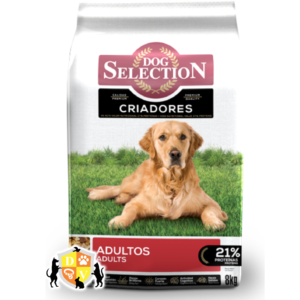Dog Selection Criadores Adulto 21 Kg.
Desarrolló una nutrición que alimenta a tu mascota, la protege y la estimula en cada etapa de su desarrollo, ayudándolos a alcanzar su máximo potencial.
Cuidando su salud intestinal, promoviendo la óptima digestibilidad, reforzando la respuesta inmune, brindando una alta palatabilidad y alentando el desarrollo neurológico y cognitivo de tu mascota.
Beneficios
-Alimento balanceado indicado para perros adultos, de todos los tamaño, de mas de un año de vida.
-Posee en su composicion manano-oligosacaridos ( MOS) en conjunto con antioxidantes, como la vitamina E.
-Alimento que refuerza el sistema inmunitario protegiendolo de agentes infecciosos.Precio : $1500
-
Dog Selection Premium Adulto 21 Kg.
Dog Selection Premium Adulto 21 Kg.
Desarrolla una nutrición que los alimenta, protege y estimula en cada etapa de su desarrollo, ayudándolos a alcanzar su máximo potencial.
Cuida la salud intestinal, promueve la óptima digestibilidad, refuerza la respuesta inmune, brinda alta palatabilidad y alienta el desarrollo neurológico y cognitivo de nuestros perros.
Los manano-oligosacáridos (MOS) en conjunto con antioxidantes, como la vitamina E, REFUERZAN el SISTEMA INMUNITARIO protegiéndolo de agentes infecciosos.
Precio : $1500
-
Vagoneta Perro Adulto 20Kg
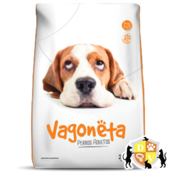Vagoneta Perro Adulto 20Kg
Su fórmula balanceada en proteínas, vitaminas, minerales y OMEGA 3, 6 y 9 le aporta a tu mascota los nutrientes necesarios para tener una alimentación completa y saludable.
Sus exquisitos sabores hacen de Vagoneta el alimento ideal para perros
•Alimento para todas las razas y tamaños
•21% de proteínas
•Sabor Gourmet
•Aroma extra que les encanta!!
•3500 kcalPrecio : $1500
-
Pacha Perro Adulto Mix 22 Kg.
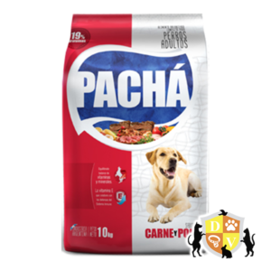Pacha Perro Adulto Mix 22 Kg.
Pachá Perro Adulto ha sido formulado para cumplir los niveles nutricionales establecidos por AAFCO (Asociación Americana de Agentes de Control de Alimentos) para los alimentos destinados a perros.
Tanto en su formulación como en el proceso de elaboración de ha puesto énfasis en cuidar todos los detalles que permitan preservar la excelente palatabilidad, calidad nutricional y salud de su perro.Precio : $1500
-
Cat Selection Adulto 10 Kg.
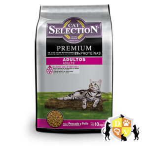Cat Selection Adulto 10 Kg.
Está especialmente formulado para lograr niveles bajos de acidez en la orina y evitar la formación de cristales (urolitos) causantes de la Enfermedad de las Vías Urinarias Inferiores Felinas (conocida por sus siglas en inglés FLUTD, Feline Low Urinary Tract Disease).
Los antioxidantes como la vitamina E (tocoferoles) y el ácido ascórbico (vitamina C), junto con la levadura de cerveza hidrolizada que constituye una importante fuente de β-glucanos y otros componentes funcionales, refuerzan el sistema inmunológico retardando la acción oxidativa y reduciendo los efectos del envejecimiento.
Las proteínas de alta calidad en conjunto con vitaminas, minerales y ácidos grasos ricos en Omega 3 y Omega 6- aportados principalmente por el aceite de pollo y de pescado-, favorecen el mantenimiento de una piel sana y un pelo fuerte y brillante.Precio : $1500
-
Infinity Gato Adulto 10 Kg.
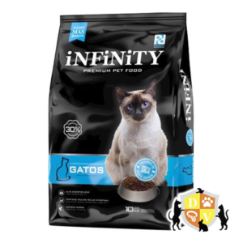Infinity Gato Adulto 10 Kg.
Nutrición premium para tu mascota.
Equilibrio de Omega 3 y 6. Ácidos grasos.
ANÁLISIS NUTRICIONAL:
Proteína Bruta Tenor Mínimo 30%, Extracto Etéreo Tenor Mínimo 13%, Fibra Cruda Tenor Máximo 3%, Minerales Totales Tenor Máximo 10%, Humedad Tenor Máximo 12%, Tenor de Calcio Máximo 1,5%, Tenor de Calcio Mínimo 1,2%, Tenor de Fósforo Máximo 1,1%, Tenor de Fósforo Mínimo 0,94%, Energía Metabolizable 3.900 Kcal./Kg. M.S.Precio : $1500
-
Vagoneta Gato Adulto 20Kg.
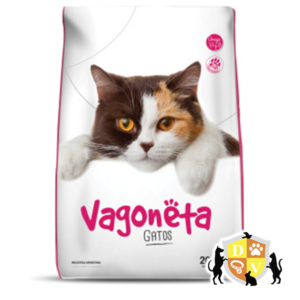Vagoneta Gato Adulto 20Kg.
INGREDIENTES:
Harina de carne, harina de vísceras de pollo, harina de pescado, grasa de pollo, harina de trigo, arroz, maíz, fibra de maíz, afrechillo de trigo, gluten de maíz, pellet de soja, pulpa de remolacha, levadura de cerveza, extracto de yucca schidigera, harina de germen de maíz desgrasado, aceite de girasol de alto oleico, taurina, metionina, sal, celulosa, inulina, zeolita, manano-oligosacáridos. Saborizante: hidrolizado de vísceras.
Acidificante: ácido fosfórico y bisulfato ácido de sodio.
Conservante: sorbato de potasio. Antifúngico: ácido propiónico y propionato de calcio. Antioxidantes: BHT/ BHA/ácido cítrico/EDTA etoxiquina. Núcleo vitamínico-mineral:
Vitaminas: A, B1, B2, B6, B12, D3, E, K, ácido fólico, ácido nicotínico, ácido pantoténico, biotina, colina.
Minerales: zinc, hierro, cobre, manganeso, yodo, selenio.
Precio : $1500
-
Pacha Gato Adulto Mix 10 Kg.
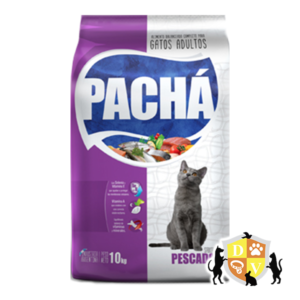Pacha Gato Adulto Mix 10 Kg.
Formulado para cumplir los niveles nutricionales establecidos por AAFCO (Asociación Americana de Agentes de Control de Alimentos) para los alimentos destinados a gatos.
Tanto en su formulación como en el proceso de elaboración de ha puesto énfasis en cuidar todos los detalles que permitan preservar el excelente gusto, calidad nutricional y salud para su gato.
Con harina de carne, pollo y pescado.Precio : $1500